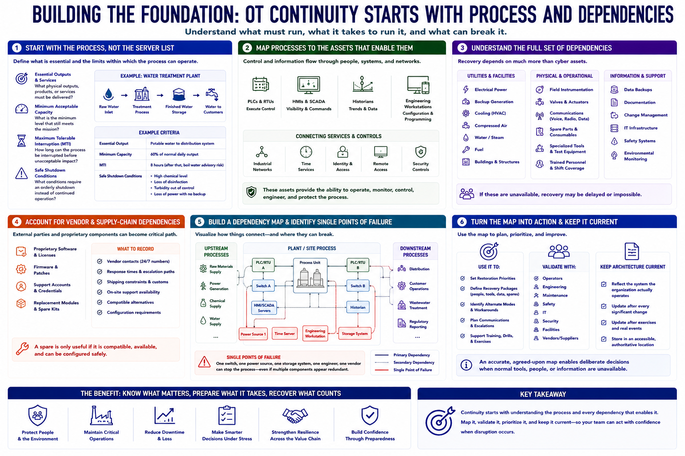

Critical Process and Asset Identification
Connecting to LMS... Progress: in progress

Narration
Start continuity analysis with the process, not the server list. Identify which physical outputs and services are essential, what minimum capacity is acceptable, how long interruption can be tolerated, and which conditions require safe shutdown rather than continued operation.
Map each process to the assets that enable it. PLCs and RTUs execute control. HMIs and SCADA systems provide operator visibility and commands. Historians preserve trends. Engineering workstations hold configuration and programming capability. Networks, time services, identity, remote access, and security controls connect the environment.
Dependencies extend beyond cyber assets. Electrical power, backup generation, cooling, compressed air, water, fuel, communications, buildings, field instrumentation, spare parts, specialized tools, and trained personnel may determine whether recovery is possible.
Vendor and supply-chain dependencies matter when equipment requires proprietary software, licenses, firmware, support credentials, or replacement modules. Record contract contacts, response times, shipping constraints, and alternatives. A spare is only useful if it is compatible and can be configured safely.
Build a dependency map that shows prerequisites and single points of failure. A redundant server may still depend on one switch, one power source, one storage system, or one engineer. Include upstream and downstream processes so local recovery does not create a larger imbalance.
Use the map to set restoration priorities and recovery packages. Validate it with operators, engineers, maintenance, safety, IT, security, facilities, and vendors. Architecture documents should describe the system the organization actually operates, then be updated after every significant change or exercise.